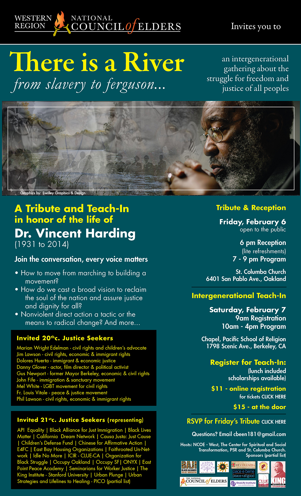

Friends,
There is a conversation about racial justice flowing throughout the land. Read on for just three examples in different parts of the country.
How are you a part of it? We want to know! Reply to this email and let us know what is going on in your communities so we can feature it in the future.
There is a River in the San Francisco Bay Area
FOR invites you to a tribute and teach-in to honor the life of Dr. Vincent Harding (1931-2014), sponsored by the Western Region National Council of Elders.

There Is a River from Ferguson to Slavery is an intergenerational gathering about the struggle for freedom and justice for all peoples.
On Friday, February 6th there will be a tribute and reception that is open to the public. The reception with light refreshments starts at 6 pm followed by a program from 7 to 9pm at St. Columba Church, 6401 San Pablo Avenue, Oakland, CA.
On Saturday, February 7th will be an intergenerational teach-in: Register in advance or at the door at 9 am.
The program will run from 10 am to 4 pm at the Chapel of the Pacific School of Religion, 1798 Scenic Avenue, Berkeley, CA.
Please join the conversation, every voice matters.
Topics will include:
- How to move from marching to building a movement?
- How do we cast a broad vision to reclaim the soul of the nation and assure justice and dignity for all?
- Nonviolent direct action a tactic or the means to radical change? and more
Invited 20th century Justice Seekers are Marian Wright Edelman, Rev. Jim Lawson, Danny Glover, Mel White, Phil Lawson, Gus Newport, John Fife, Fr. Louis Vitale, and more.
Invited 21st century Justice Seekers (representing) API Equality, Black Lives Matter, Occupy Oakland, California Dream Network, Occupy SF, Organization for Black Struggle, The King Institute-Stanford University, Urban Plunge, PICO and many others.
FOR is honored to be among the supporting sponsors of the tribute to Dr. Harding. One of the recipients of our 2013 Martin Luther King, Jr. Peace Award, Vincent Harding knew that education is the key to a vibrant and healthy democracy, and that a healthy and vibrant democracy with an educated populace is the key to a just society.
A teach-in is a fitting tribute to this elder who was both mystic and scholar, always pointing to the transcendent dimension of a just cause, even through suffering, and finding a teachable moment that furthered the way of peace and the way of love.
Dr. Harding's commitment to actively mentor the next generation is honored in the way that this event has been constructed with young leaders’ voices being in the forefront of the dialogue.
"We are not alone in this struggle for the re-creation of our own lives and the life of our community. It has long been written and known that those who choose to struggle for the life of the earth and its beings are part of an ageless, pulsating membrane of light that is filled with the lives, hopes, and beatific visions of all who have fought on, held on, loved well, and gone on before us. For this task is too magnificent to be carried by us alone, in our house, in our meeting, in our organization, in our generation, in our lifetime... we are all a part of one another, and we are all part of the intention of the great creator spirit to continue being light and life." ~ Dr. Vincent Harding
If you are in the Bay Area, please join us in remembrance and celebration of light and life.
A River Flows in Ferguson, MO
 In line with the Bay Area tribute and intergenerational conversation for Dr. Vincent Harding, an eminent truth teller for justice, people are coming together in Ferguson on March 14-17 to build a culture of truth telling with regard to racial justice and police practices. In line with the Bay Area tribute and intergenerational conversation for Dr. Vincent Harding, an eminent truth teller for justice, people are coming together in Ferguson on March 14-17 to build a culture of truth telling with regard to racial justice and police practices.
A Truth Telling Weekend will be held in Ferguson to launch the national conversation. We'd love to have you join us there! Check out The Truth Telling Project website and watch your email for more ways to be involved.
A River Flows in Nyack, NY
At FOR-USA national headquarters we are about to launch a book group and film series to inspire conversations.
The book group to begin in February is comprised of a small group of folk interested in furthering their understanding and practice of nonviolent communication. Participants will read Marshall B. Rosenburg's Nonviolent Communication A Language of Life, and meet every other week to discuss the concepts, do exercises in the book, and practice through role play.
If you're interested in forming your own book group, please reply to this email.
The film series called Race, Conflict, and Injustice, will begin on February 9 and continue on the second Monday in each month through July 13. Screenings will take place at 6:30 pm in the Peace Room at Shadowcliff and will feature the following films in this order: Fruitvale Station, Freedom Riders, The Butler, Mandela: Long Walk to Freedom, End of America, and Lord of War.
For more information about the film series, please contact Gretchen at ghonnold@forusa.org.
What Is Flowing in your River?
We always welcome hearing from you and staying connected. Please share your events and gatherings and inform us of the conversations for racial justice, demilitarizing police, ending the new Jim Crow, and other pursuits for justice that are taking shape in your communities.
Your partners in the struggle for peace and nonviolent justice,
Kristin, Ethan, Gretchen, and all of the FOR-USA team.
Photo credits: Western Region National Council of Elders, Swilley Graphics and Design, Wichita Ferguson Meeting from The Truth Telling Project, Creative Commons by ElyceFliz |